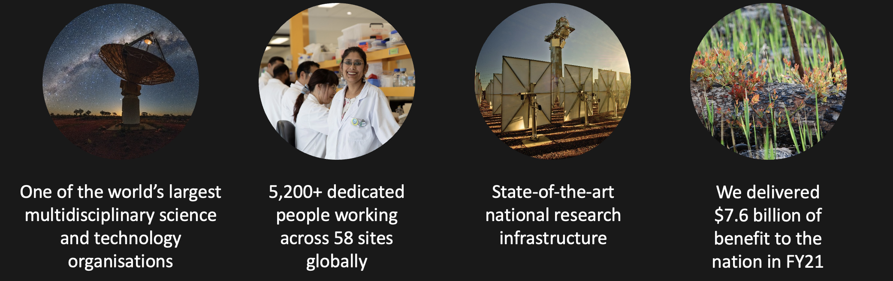
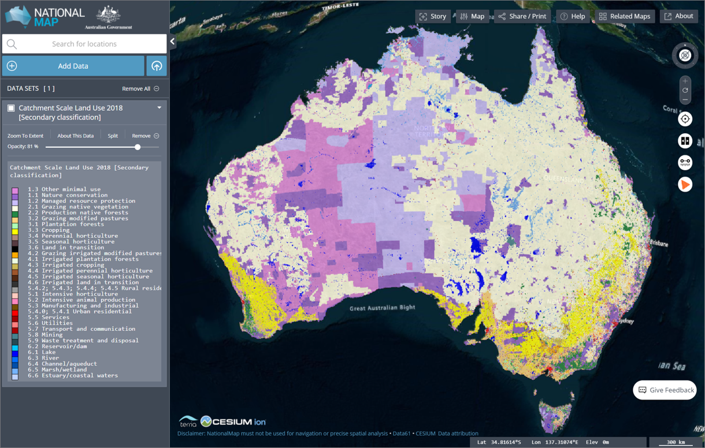
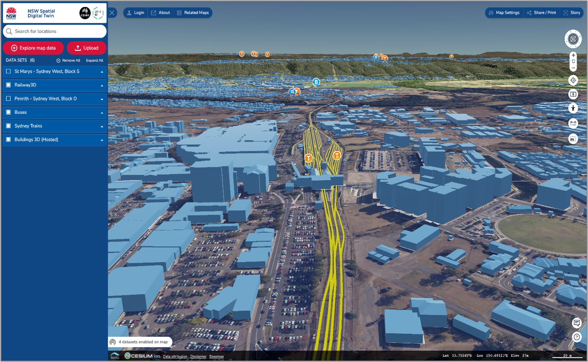
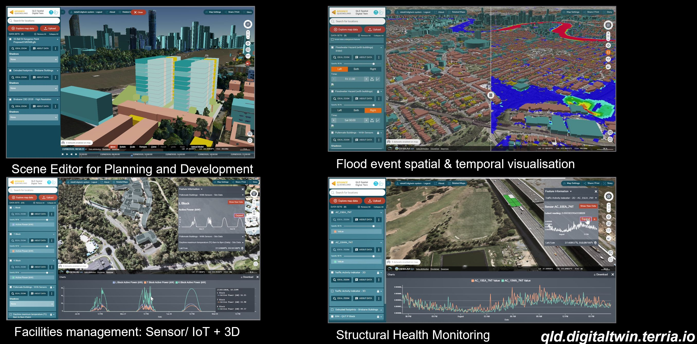
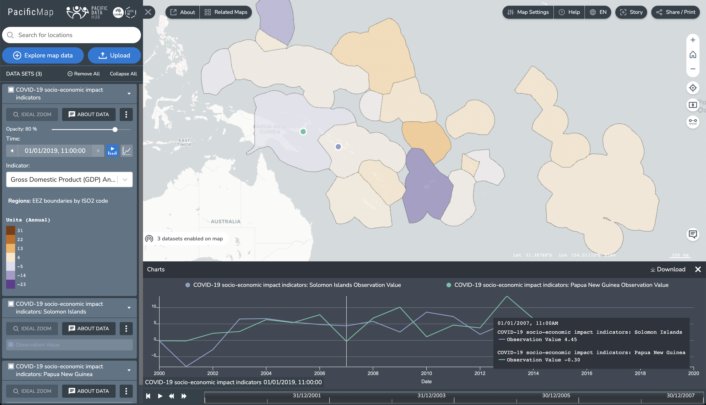
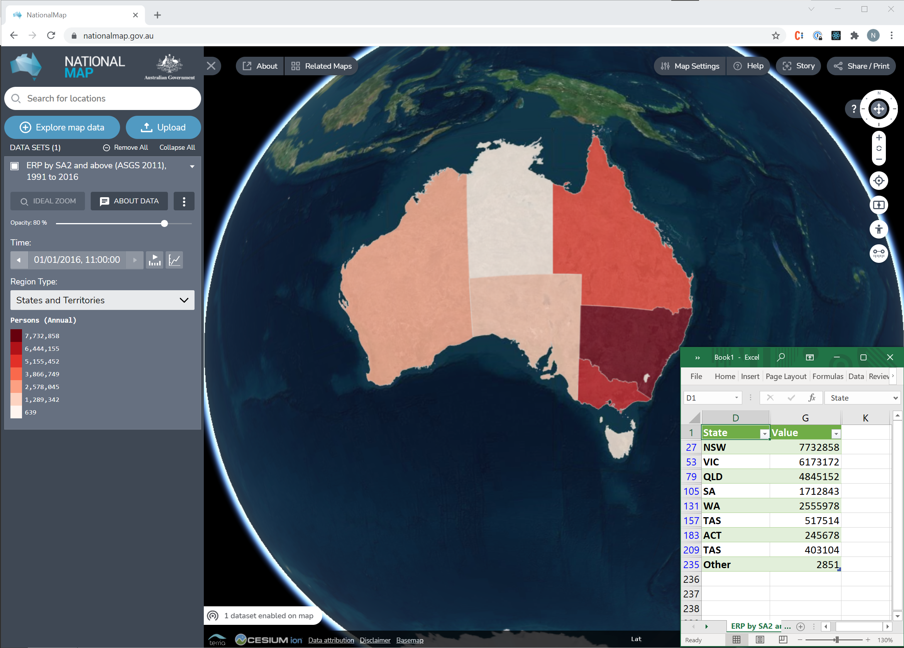

## Exploring the World’s Open Data Portals Discovery, Visualisation and Analysis of Open Data with TerriaJS <span style="font-weight: 100; font-size: 50%;">Nick Forbes-Smith — CSIRO's Data61 — Sydney/Hobart, Australia</span><br> <span style="font-weight: 100; font-size: 50%;"></span>https://nf-s.github.io/foss4g-terria-open-data/</span>
## CSIRO *Australia’s national science agency* </img>
## Terria - An open-source framework for web-based geospatial catalogue explorers - **Cesium/Leaflet** based in-browser tool for looking at 2D and 3D data - Australian team working at CSIRO's Data61 - Find us at [terria.io](http://terria.io/)
## NationalMap - Geospatial data discovery, visualisation and sharing - Launched 2014 to support Aus Gov Open Data Policy - 14,000+ datasets, 30,000+ sessions/month </img>
## NSW Digital Twin *"An ecosystem of platforms, infrastructure, data, and information management governance arrangement"* - Lead by Department of Customer Service, Spatial Services (NSW) - Our first in bringing together 2D, 3D, 4D geospatial + BIM, IoT/sensor data </img>
## QLD DT Prototype - Department of resources (QLD) and Advance QLD - Some "richer" datasets </img>
## Vic Digital Twin - VIC Department of Environment land water and planning recently announced their **Digital Twin Victoria Program** - Just launched <img src="img/vicdt.jpg" width="800px"></img>
## Digital Earth Aus/Africa - **Landsat/Sentinel satellite imagery** - Satellite imagery derived products and "analysis ready data" - Heavily integrated with **OpenDataCube** <img src="img/demaps.jpg" width="800px"></img>
## PacificMap - **Pacific Data Hub (PDH) and the Pacific Community Secretariat (SPC)** - CKAN and SDMX </img>
## GEO-RAPP ... </img>
## Terria connectors *All in a web browser* - Imagery (tiled services) - Vector - 3D - Tabular/Sensor - Portals
## Imagery - **WMS/WMTS/XYZ sources** - Tight integration with OpenDataCube OWS - MapboxStyle/Carto/BingMaps - ArcGis Imagery/Map Service
## Vector sources - **Web Feature Service**/ArcGis Feature Service - **GeoJson**/Shapefile/**KML/CZML/GPX/GeoRSS** - **Mapbox Vector Tiles**
## 3D sources - **Cesium 3d-tiles** - **Cesium Terrain** - **CZML** - **GLTF** - Converter for 40+ file formats - `assimpjs`: WebAssembly **Open Asset Import Library**
## Tabular/Sensor - **CSV** - **SDMX** - **SensorObservationService** - **Socrata** - OpenDataSoft
## Portals - **CKAN** - **CSW** - **Socrata** - OpenDataSoft - **Magda** - **THREDDS** - **WMS/WFS/WPS** - ArcGis - ArcGis Portal + Map/Feature Service - **SDMX**
## What I do Sydney, Australia Software Engineer for TerriaJS - 2D data visualisation - vector - raster - tabular/sensor/point based - API/portal connections - OGC - WMS, WFS, WPS, CSW, SOS - THREDDS - Socrata - OpenDataSoft - SDMX
## NationalMap - 46 open data portals - (1105 curated datasets) Total 14,000+ datasets
## NationalMap open data portals - **7** WMS — *imagery* - **18** OpenDataSoft — *tabular* - **1** SDMX — *tabular* - **2** WFS — *vector* - **1** WPS — *analytics* - **11** ArcGis — *imagery/vector* - **5** CKAN — *imagery/vector* - **1** CSW — *imagery/vector* Total 13,000+ datasets
## Explore the open data - Discovery - Visualisation - Analysis - Create/share maps with the world!
## Discovery - Search / indexing - Catalog structure - Query open data portals
## Visualisation - Imagery - Tabular data - Vector data - 3D?
## Imagery - Time-series - Animation over time - Compare - Export - Open data cube - Filter by location - Difference
## Time-series
## Compare
## Export (WCS)
## Open data cube: Filter by location
## Open data cube: Difference
## Vector data - Automatic styling - Filtering* - Edit styling - Export
## Automatic styling
## Filtering*
## Edit styling
## Export
## Tabular data - Region mapping - Time-series - *Automatic styling* - *Filtering** - *Edit styling* - *Export*
## Region mapping
## Time-series
## Analysis - Browser tools - Web Processing Service - Open data cube - difference tool
## Create/share maps with the world! - Share links - Stories
## How? Open source libraries
## Region mapping </img> - Vector tile based - Matches region geometry to rows in a table - Terria supports over 100 region sets
Demo
## Fin - [NationalMap](https://nationalmap.gov.au) - nationalmap.gov.au - [PacificMap](https://map.pacificdata.org) - map.pacificdata.org
213.244.242.6